Sapi,Kambing, Kerbau dan Kuda termasuk hewan ternak yang banyak dipelihara oleh manusia. Daging dan susu yang dihasilkan oleh sapi dan kambing bisa dikomsumsi, hewan-hewan diatas termasuk hewan herbivora atau bisa disebut hewan pemakan tumbuhan
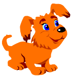
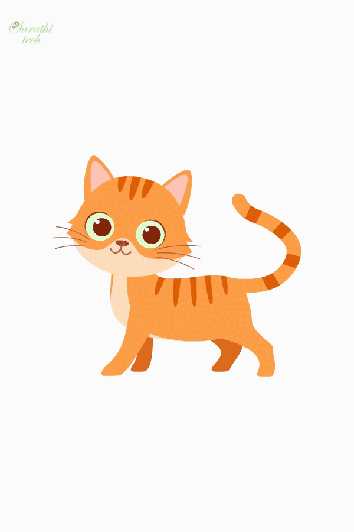
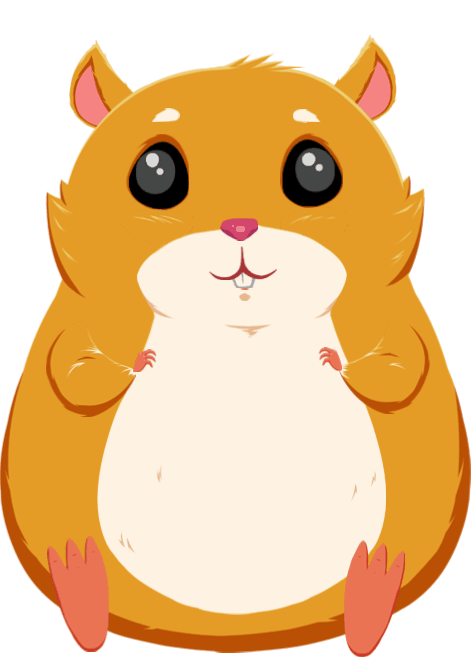
Anjing, Kucing, Ikan dan Hamster termasuk hewan rumahan yang banyak dipelihara oleh manusia. Anjing, Kucing biasanya makan yang berbau daging atau bisa disebut karnivora. Sedangkan Ikan pelet atau serangga kecil dan Hamster biasanya makan biji-bijian
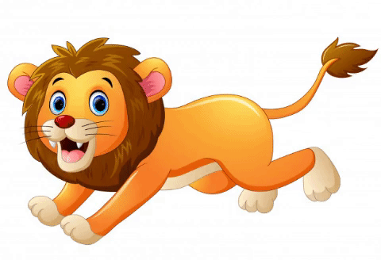
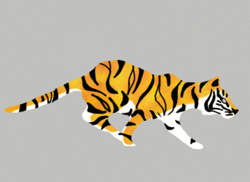
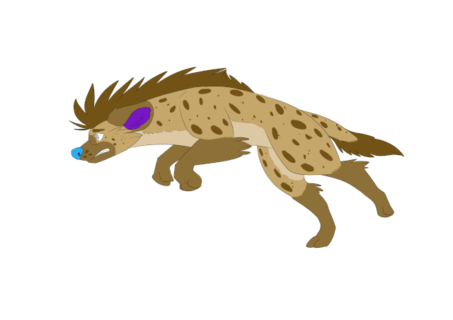
Singa, Harimau, Macan Tutul, dan Hyena termasuk hewan buas yang biasa tinggal alam liar. Mereka adalah hewan pemakan daging atau bisa disebut Karnivora. Mereka juga biasa hidup secara berkelompok

 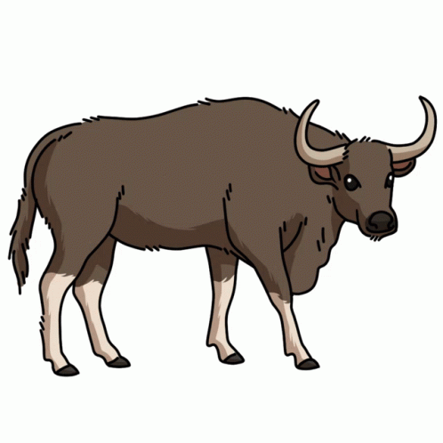
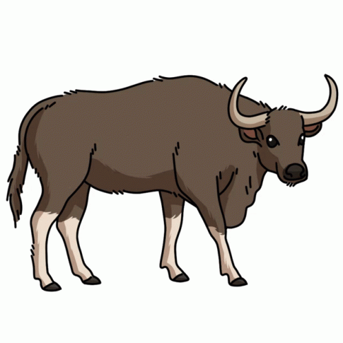

 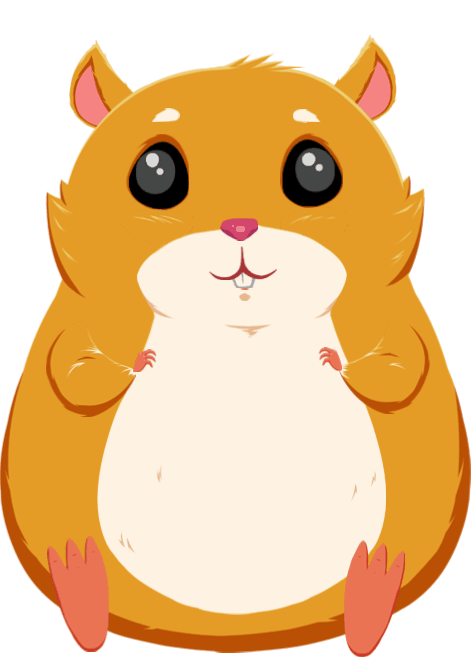
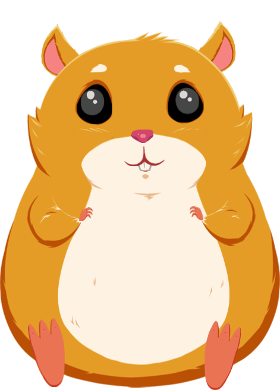
 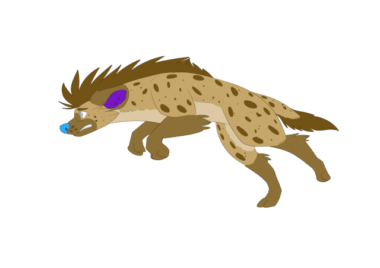
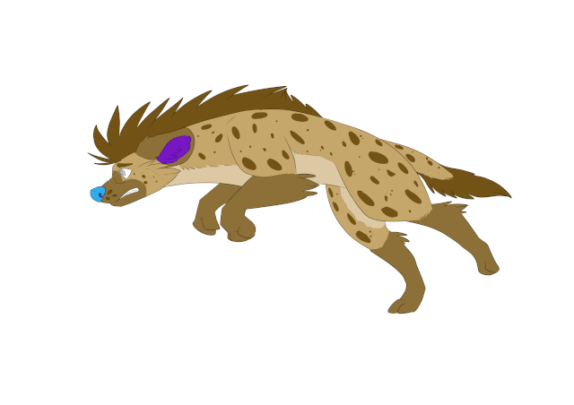